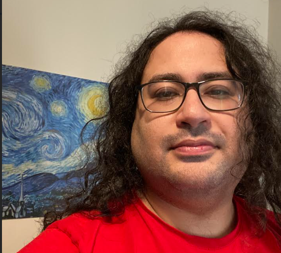

Geometry & topology
Differential and symplectic geometry, moduli spaces of flat connections, character varieties, Floer theory and pseudoholomorphic curves.
Mathematics · University of Sussex
At the meeting point of probability,
geometry and mathematical physics.
I am a PhD researcher in Mathematics at the University of Sussex, supervised by Antoine Dahlqvist. I study two-dimensional Yang–Mills theory and large-N limits, using lattice models, random matrices, geometry, topology and representation theory.

Mathematical background
My current work is in probability and mathematical physics, with earlier research and study in geometry, topology and dynamical systems.
Differential and symplectic geometry, moduli spaces of flat connections, character varieties, Floer theory and pseudoholomorphic curves.
Two-dimensional Yang–Mills theory, lattice models, large-N limits, random matrices, free probability, Wilson loops and Makeenko–Migdal equations.
Heat kernels, asymptotic analysis and representation-theoretic methods in gauge theory; earlier work on Fredholm theory and dynamical systems.
An ongoing interest in the mathematical foundations of deep learning. My training includes the Fourth IPM Advanced School on Computing: Artificial Intelligence (2020).
Current research
My projects study random fields on surfaces: how the shape and topology of the underlying space affect the model, and whether a simpler description emerges as the matrices describing the field become large.
I use lattice models, which describe a system through variables on a graph. In my work, these provide a discrete setting for questions linking probability, geometry and mathematical physics.
This project studies a random field on the real projective plane, a surface where following certain closed paths reverses orientation. I investigate how this topology affects measurements around loops as the matrices describing the field become large. The aim is a simpler deterministic description, called a master field.
Methods: lattice gauge models, heat-kernel measures, representation theory and Makeenko–Migdal equations.
This project connects a random field model with geometry. I study two-dimensional Yang–Mills theory as the surface’s area becomes small. The aim is to relate its limiting probability distribution to the geometry of flat connections: field configurations with zero curvature. This links a probabilistic model to symplectic geometry.
Methods: moduli spaces, symplectic and Poisson geometry, and heat-kernel analysis.
This project extends the large-matrix investigation to non-orientable surfaces with more complicated topology, including additional handles and orientation-reversing paths. I study how these global features affect measurements around loops, and whether a deterministic limiting description can be established.
Methods: lattice gauge models, topology of surfaces, representation theory and Makeenko–Migdal equations.
Manuscripts in final preparation. Preprints are anticipated on arXiv by December 2026 (estimate as of October 2026); links will be added when the preprints are public.
Professional experience
I review research-level mathematics and theoretical-physics content generated by AI systems, assessing correctness, assumptions, logical consistency and rigour. I identify errors and gaps in technical arguments and independently evaluate whether conclusions are mathematically justified across advanced topics.
Education & experience
University of Sussex, UK
Supervisor: Antoine Dahlqvist
Joint programme: Sorbonne Université, Université de Paris and Université Sorbonne Paris Nord, France
Sharif University of Technology, Iran
Master’s thesis reviewing the work of Fish and Hofer, supervised by Vincent Humilière.
Study with Felix Schlenk, including a memoir on Fredholm properties of Floer equations with a time-delayed action functional.
Communication & teaching
Analysis II; Differential Geometry of Curves and Surfaces.
Taught geometry and special topics to high-school students, including an intuitive introduction to differential geometry at Sharif (2013).
Invited grader.
Academic community
University College London, UK
ICMS, Bayes Centre, Edinburgh, UK
Queen Mary University of London, UK
Curriculum vitae
Professional experience, education, research, talks, teaching, awards and conference participation.
Updated October 2026 · PDF
Contact
For research discussions, collaborations, or opportunities drawing on my mathematical background, please get in touch.
Department of Mathematics
University of Sussex
Brighton, United Kingdom